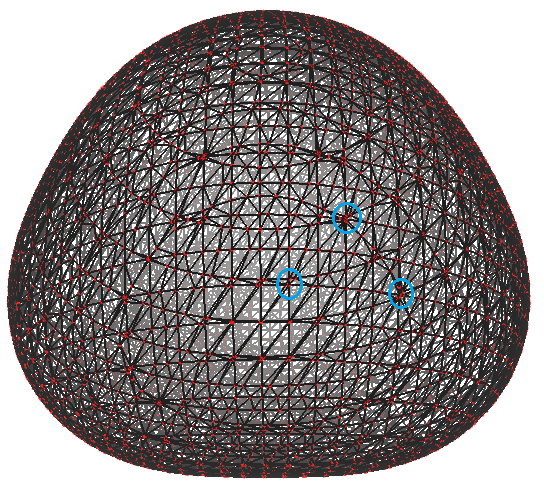
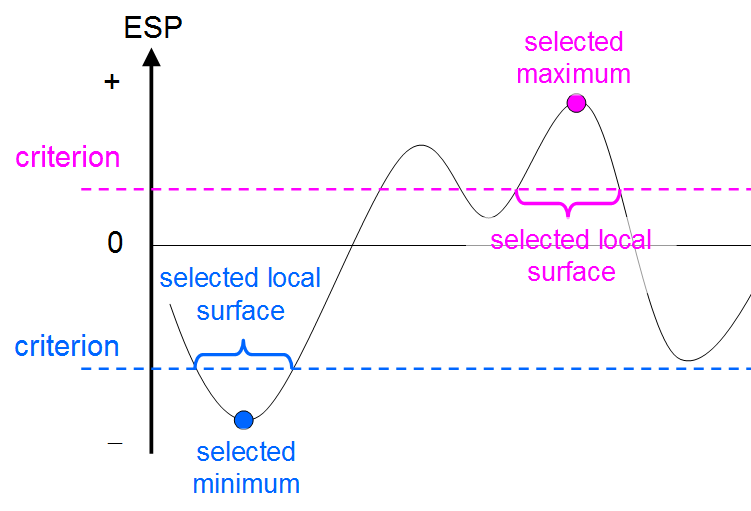
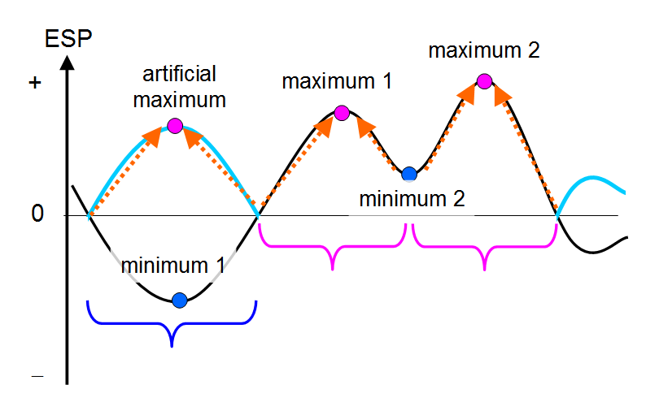
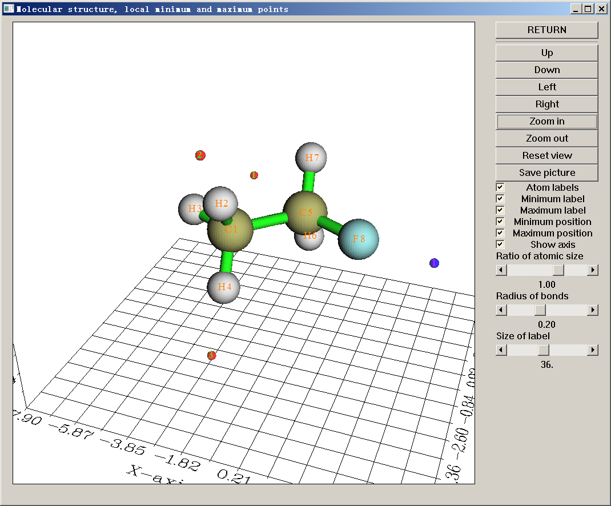
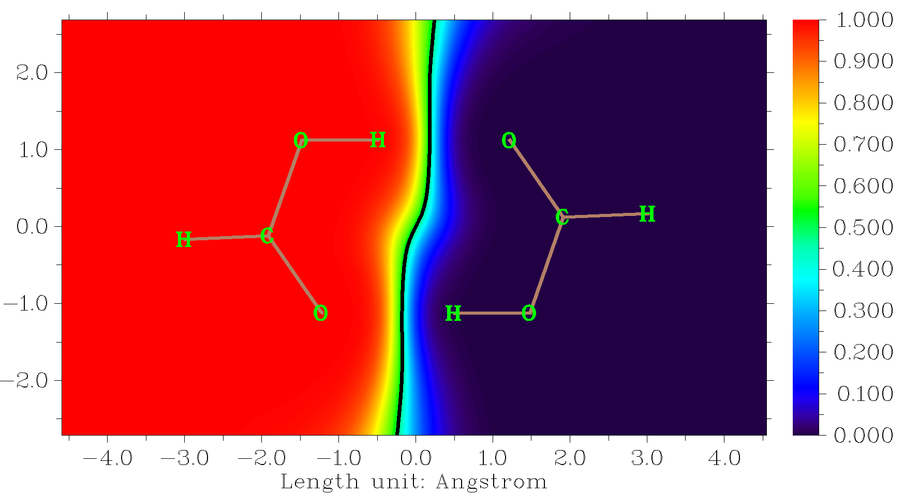
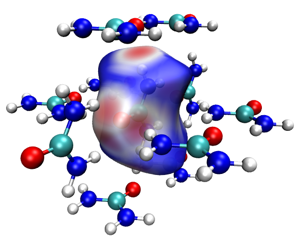

3.15 分子表面的定量分析 (12)
分子表面的定量分析是一个强有力的工具，它有许多实际应用，例如预测反应位点、预测分子性质以及解释分子间弱相互作用。本模块涉及的理论和数值算法已在我的论文 J. Mol. Graph. Model., 38, 314 (2012) 中详细描述。在接下来的两节中，这两个方面将只作简要介绍。
3.15.1 理论
在 Multiwfn 中，原则上任何实空间函数在分子表面（或由某一函数的等值面定义的表面）上的分布都可以进行定量研究。分子范德华 (van der Waals, vdW) 表面上的静电势 (electrostatic potential) 和平均局部电离能特别有用，因此本节将详细讨论它们。同样的定量分析也可应用于其他实空间函数，例如用户自定义函数、电子离域范围函数 (electron delocalization range function, EDR)，甚至 Fukui 函数和对偶描述符。
(1) vdW 表面上的静电势
分子静电势 (electrostatic potential, ESP)，V(r)，长期以来被广泛用于预测亲核和亲电位点以及分子识别模式，其理论基础是分子总是倾向于以 ESP 互补的方式相互接近。这些 ESP 分析通常在分子范德华 (vdW) 表面上进行。虽然这种表面的定义是任意的，但大多数人倾向于将电子密度的 0.001 a.u. 等值面作为 vdW 表面，因为该定义反映了分子的特定电子结构特征，例如孤对电子和 $\pi$ 电子，这也是我们的分析中所采用的定义。
vdW 表面上的 ESP 分析已被进一步量化以提取更多信息。研究表明，通过分析表面上极小点和极大点的大小和位置，可以很好地预测和解释弱相互作用（包括氢键、二氢键和卤键）的强度和方向。Politzer 等人 (J. Mol. Struct. (THEOCHEM), 307, 55 (1994)) 基于 vdW 表面上的 ESP 定义了一套分子描述符，将其作为广义相互作用性质函数 (general interaction properties function, GIPF) 的自变量。GIPF 成功地将 vdW 表面上的 ESP 分布与许多凝聚相性质联系起来，包括密度、沸点、表面张力、汽化热和升华热……
$A^{+}$ 和 $A^{-}$ 分别表示 ESP 取正值和负值的表面面积。总表面积 A 是二者之和。
$\overline{V}_{\mathrm{S}}^{+}$ 和 $\overline{V}_{\mathrm{S}}^{-}$ 分别表示 vdW 表面上正、负 ESP 的平均值
其中 $N_{+}$ 和 $N_{-}$ 分别为正、负区域中采样点的数目，指标 i 只遍历相应的点。下标 S 意为“分子表面”。整个表面上 ESP 的平均值为
其中 $N=N_{+}+N_{-}$ 为表面点的总数。
$\Pi$ 为表面上的平均偏差，被视为内部分子电荷分离的指标：
总 ESP 方差可写成正、负两部分之和：
方差反映 ESP 的变化程度。${\sigma}_{+}^{2}$ 和 ${\sigma}_{-}^{2}$ 越大，分子分别通过正、负 ESP 区域与其他分子相互作用的倾向越强。
电荷平衡度 (degree of charge balance，也称 balance of charges) 定义为
当 ${\sigma}_{+}^{2}$ 等于 ${\sigma}_{-}^{2}$ 时，$\nu$ 取得最大值 0.25。$\nu$ 越接近 0.25，分子通过正、负区域以相似程度与其他分子相互作用的可能性越大。
${\sigma}_{\mathrm{tot}}^{2}$ 与 $\nu$ 的乘积也是一个非常有用的量，${\nu\sigma}_{\mathrm{tot}}^{2}$ 较大表明该分子通过静电作用与同类分子相互作用的倾向相对较强。
为了定量描述分子极性，我定义了一个称为分子极性指数 (molecular polarity index, MPI) 的量，它与 ∏ 指数密切相关。
其中 S 表示分子表面。我对一些代表性分子的测试表明，MPI 是衡量分子极性的相当可靠的指标，指数越大，极性越高。如果 MPI 涉及您的研究，请引用我的论文 Carbon, 171, 514 (2021)，这是首次引入 MPI 指数的出版物。
偏度 (skewness) 可用于衡量实空间函数在分子表面上关于其平均值分布的不对称性。正偏度计算如下
类似地，计算负偏度时只考虑 ESP 为负的表面点；而计算总体偏度时则使用全部表面点。对于每种偏度，其值越正（负），ESP 相对于平均值向负（正）方向分布的倾向越强。
在 Multiwfn 中，上述表面描述符不仅可以在整个 vdW 表面上计算，还可以在对应于原子或用户自定义片段的子区域上计算。该理论的细节尚待发表，因此目前此处不作记录。此外，这些表面描述符可以针对任何其他实空间函数进行计算。
(2) GIPF 描述符的一些实际应用
预测汽化热和升华热
上述 GIPF 描述符的一个实际应用见于 J. Phys. Chem. A, 110, 1005 (2006)。作者表明，对于一系列含 C、H、N 和 O 元素的分子，汽化热可以很好地估算为
最小二乘拟合系数为 $a$ = 2.130、b = 0.930 和 c = -17.844。升华热可预测为
其中 $a$ = 0.000267、b = 1.650087 和 c = 2.966078。上述方程中表面积 A 以 Ų 为单位，$\Delta H_{\mathrm{sub}}$ 以 kcal/mol 为单位，${\sigma}_{\mathrm{tot}}^{2}$ 以 (kcal/mol)² 为单位。注意这些系数或多或少依赖于所用的计算级别。作者使用 B3LYP/6-31G* 优化几何结构，用 B3LYP/6-311++G(2df,2p) 计算 ESP。
在 Int. J. Quantum Chem., 105, 341 (2005) 中，Politzer 等人提出了预测标准状态下 $\Delta H_{\mathrm{vap}}$ 和 $\Delta H_{\mathrm{sub}}$ 的其他方程，其方程可用于含 C、H、O、N、F、Cl、S 的分子：
$\Delta H_{\mathrm{vap}}$ 和 $\Delta H_{\mathrm{sub}}$ 以 kcal/mol 为单位，A 以 Ų 为单位，${\sigma}_{\mathrm{tot}}^{2}$ 以 (kcal/mol)² 为单位。他们的研究中采用 B3PW91/6-31G**。发现 $\Delta H_{\mathrm{vap}}$ 和 $\Delta H_{\mathrm{sub}}$ 的平均绝对误差分别为 2.0 kcal/mol 和 2.8 kcal/mol。
预测分子晶体的密度
vdW 表面上 ESP 统计数据的另一个典型应用是预测含 C、H、N 和 O 元素的有机分子的晶体密度。晶体密度是含能化合物的重要性质。在 J. Phys. Chem. A, 111, 10874 (2007) 中表明，密度可由 $\rho$ = M / $V_{m}$ 估算，其中 M 为分子质量，$V_{m}$ 为由 $\rho$ = 0.001 a.u. 等值面定义的分子 vdW 体积；对于离子晶体（例如 叠氮化铵），M 和 $V_{m}$ 对应于组成该化合物一个化学式单元的阳离子和阴离子的质量与体积之和。虽然该关系非常简单，但它对大多数中性物种确实很有效，但对离子物种的误差明显更大。为了提高对中性物种的预测精度，在 Mol. Phys., 107, 2095 (2009) 中，作者将 GIPF 描述符引入公式：
在 B3PW91/6-31G** 级别下，拟合系数为 $\alpha$ = 0.9183、$\beta$ = 0.0028 和 $\gamma$ = 0.0443。该公式已被证明精度有所提高，因为分子间静电相互作用在某种程度上被有效地考虑在内。在后续论文 Mol. Phys., 108, 1391 (2010) 中，作者表明，如果引入 GIPF 描述符，离子化合物的晶体密度可以比 $\rho = M/V_{m}$ 估算得好得多：
在 B3PW91/6-31G** 级别下，最小二乘拟合系数为 $\alpha$ = 1.0260、$\beta$ = 0.0514、$\gamma$ = 0.0419 和 $\delta$ = 0.0227。方程中 ${\bar{V}}_{\mathrm{S(cation)}}^{+}$ 和 ${A}_{(\mathrm{cation})}^{+}$ 表示阳离子的 ${\bar{V}}_{\mathrm{S}}^{+}$ 和 ${A}_{}^{+}$；${\bar{V}}_{\mathrm{S(anion)}}^{-}$ 和 ${A}_{(\mathrm{anion})}^{-}$ 表示阴离子的 ${\bar{V}}_{\mathrm{S}}^{-}$ 和 ${A}_{}^{-}$。对于 30 个测试案例，平均绝对误差仅为 0.033 g/c $m^{3}$。
注意上述关系仅适用于含 C、H、N、O 元素的小有机化合物，对其他种类的体系误差显著更大。
预测沸点
在 J. Phys. Chem., 97, 9369 (1993) 中表明，沸点可预测为
其中 $\alpha$ = 2.736、$\beta$ = 33.31、$\gamma$ = -72.05 拟合自 HF/STO-5G*//HF/STO-3G* 级别。该论文还给出了预测临界温度、体积和压力的方程。
预测溶剂化自由能
在 J. Phys. Chem. A, 103, 1853 (1999) 中，给出了溶剂化自由能的预测方程（$V_{\mathrm{min}}$ 表示整个空间中 ESP 全局最小点处的 ESP 值）：
预测 pK$_{b}$
在 J. Chem. Inf. Model., 60, 1445 (2020) 中，作者表明氨基的 p $K_{b}$ 可以通过拟合方程很好地估算，例如伯胺的情形：
其中 $V_\mathrm{S,min}$ 以 kcal/mol 为单位，应在 $\omega$ B97XD/cc-pVDZ 级别下计算。该方程的预测精度相当令人满意，$R^{2}$ 高达 0.9519，平均绝对误差仅为 0.12。仲胺、叔胺也有类似的拟合方程。
预测其他性质
此外，用于预测熔化热、表面张力和晶体/液体密度的方程见于 J. Phys. Chem., 99, 12081 (1995)，用于预测含 NH₄⁺、K⁺ 和 Na⁺ 的离子晶体晶格能的方程见于 J. Phys. Chem. A, 102, 1018 (1998)。更多基于 GIPF 描述符预测有机分子物理性质的公式总结于 J. Mol. Struct. (THEOCHEM), 425, 107 (1998) 的表 3。GIPF 在生物化学体系研究中也有许多重要用途，见 Int. J. Quantum Chem., 85, 676 (2001) 的综述。
(3) 其他映射函数：平均局部电离能等
平均局部电离能 (average local ionization energy)，$\bar{I}$，已受到越来越多的关注，简要介绍见第 2.6 节相应部分。该函数有许多用途，例如再现原子壳层结构、衡量电负性、定量描述局部极化率和硬度。然而，最重要的用途可能是根据 vdW 表面上的函数值 ${\bar{I}}_{S}$ 预测反应活性。${\bar{I}}_{S}$ 值越低，表明 r 处的电子束缚得越弱，因此 r 越可能是亲电或自由基攻击的位点。许多研究表明，vdW 表面上 $\bar{I}$ 的全局最小点恰好位于实验反应位点，而同系物中相应反应位点处 $\bar{I}$ 的相对大小与相对反应活性很好地相关。感兴趣的用户建议参阅 J. Mol. Model, 16, 1731 (2010) 和专著 Theoretical Aspects of Chemical Reactivity (2007) 第 8 章。
局部电子亲和能 (local electron affinity) EA$_{L}$ 是与 $\bar{I}$ 非常相似的量，唯一区别在于所考虑的分子轨道 (orbital) 不是全部占据轨道，而是全部未占据轨道。研究表明，分子表面上的 EA$_{L}$ 有助于分析亲核进攻，细节见 J. Mol. Model., 9, 342 (2003)。
针对 Fukui 函数和轨道重叠距离函数 (orbital overlap distance function) D(r) 的分子表面定量分析也被证明相当有用，例子分别见第 4.12.4 节和第 4.12.8 节。
关于球形度
在本节末尾，值得一提的是，无论所选映射函数为何，Multiwfn 在计算过程中都会自动输出分子表面的“球形度 (sphericity)”。该量定义如下（细节见 https://en.wikipedia.org/wiki/Sphericity）
其中 A 和 V 分别为表面积和体积。球形度本质上是与当前体系具有相同体积的球体的表面积与当前体系表面积之比。它越接近 1.0，表面看起来越像理想球体。因此，例如您会发现苯 vdW 表面的球形度明显小于 Ar 原子，而对任何分子 $\rho$ = 0.01 a.u. 等值面的球形度总是小于 $\rho$ = 0.001 a.u. 等值面的球形度，因为后者更光滑。
注意以上述方式计算的球形度不适用于具有空腔的体系。例如，它不能用于合理判断 C₆₀ 富勒烯的球形度，因为球心处存在一个空腔（等值面）。
3.15.2 数值算法
3.15.2.1 整个分子表面上的分析
总之，在常见的分子表面定量分析任务中，我们需要获得所选实空间函数（即 映射函数）在 vdW 表面（或特定实空间函数的等值面）上的极小点和极大点，以及定量指标，例如 $\overline{V}_{\mathrm{S}}^{+}$、$\overline{V}_{\mathrm{S}}^{-}$、$\overline{V}_{\mathrm{S}}$、$\Pi$、$\sigma_{+}^2$、$\sigma_{-}^2$ 等。这里我简要描述 Multiwfn 如何计算这些性质，基本步骤如下。
1. 计算包围整个分子空间的电子密度 (electron density) 格点数据 (grid data)。所用格点间距越小，得到的结果越准确，但下一步生成的顶点越多，因此您在第 3 步中等待的时间越长。
2. 利用上面生成的格点数据执行 Marching Tetrahedra 算法，该步骤一般不需要太多计算时间。同时计算等值面所包围的体积。该步骤生成代表等值面的顶点及其连接关系。每相邻三个顶点构成一个三角形（下文称为面片 facet）。下面的例子是一个水分子，图中描绘了顶点（红点）和连接关系（黑线）：

3. 由于计算 ESP 非常耗时，为了减少总计算时间，Multiwfn 会自动消除冗余点。具体而言，如果两点之间的距离小于特定值，其中一点将被消除，另一点将被移到它们的平均位置。上图中蓝色圆圈内聚集的点最终将被合并为一个点。
4. 计算等值面上每个顶点处的映射函数（ESP、$\bar{I}$ 等）。对于 ESP，这是最耗时的步骤；但对于例如 $\bar{I}$ 和 EA$_{L}$，该步骤可以立即完成。
5. 利用连接关系定位并输出表面上映射函数的极小点和极大点。如果某顶点处的映射函数值低于（大于）其第一层邻居和第二层邻居处的值，则该顶点将被视为表面极小点（极大点）。
6. 计算并输出 $\overline{V}_{\mathrm{S}}^{+}$、$\overline{V}_{\mathrm{S}}^{-}$、$\overline{V}_{\mathrm{S}}$、$\Pi$、$\sigma_{+}^2$、$\sigma_{-}^2$、$\sigma_{\mathrm{tot}}^2$、$\nu$、$\nu\sigma_{\mathrm{tot}}^2$、P，以及 vdW 体积、总 vdW 表面积、映射函数为正的区域面积和为负的区域面积。例如，$\overline{V}_{\mathrm{S}}$ 按下式计算
其中 N 为面片总数，A 为所有面片面积之和，$A_{i}$ 为面片 i 的面积，$F_{i}$ 为面片 i 的 ESP 值（或其他映射函数的值），取为组成该面片的三个顶点处 ESP 的平均值。
3.15.2.2 局域分子表面上的分析
为了从 vdW 表面上映射函数的分布中揭示更多有化学用处的信息，Multiwfn 支持三种局域 vdW 表面分析，如下所述。
(1) 对应于各原子的局域分子表面分析
在该模式下，整个分子表面将首先分解为对应于单个原子的局域表面，然后计算这些原子表面的所有表面性质。该功能对研究原子性质非常有帮助。例子见第 4.12.3 节。
注意分子表面上的原子局域区域不能唯一定义。Multiwfn 采用的规则如下，该规则简单且具有明确的物理意义。对于分子表面上的任一给定点 r，Multiwfn 通过下式计算所有原子的权重 w：
其中 A 表示原子序号，$\mathbf{r}_{A}$ 和 $R_{A}$ 分别为原子 A 的坐标和半径。表面点 r 被归属于具有最大权重的原子。可以看出，在原子核 A 的位置，$w_{A}$ 达到最大值 1.0。$w_{A}$ 随距离 $|\mathbf{r}-\mathbf{r}_{A}|$ 的增大而线性衰减，当距离恰好等于相应原子半径时衰减到零。原子半径越大，权重衰减越慢，因此上述权重定义使尺寸较大的原子更有可能覆盖分子表面上更宽的范围。
在 Multiwfn 中也可以对用户自定义片段对应的局域分子表面进行分析，该片段的区域就是构成它的所有原子的区域之和。
(2) 特定表面极值点周围的局域分子表面分析
这种分析主要用于测量 $\sigma$ 空穴和 $\pi$ 空穴的面积并以图形揭示其区域，实际例子见第 4.12.10 节，但如果映射函数不是静电势，它也可用于其他分析目的。
在该模式下，您需要选择一个表面极值点并设定一个判据。当您选择一个表面极大点（极小点）时，如果一个表面顶点与该表面极值点直接或间接相连，且该顶点处映射函数的值高于（低于）该判据，则该顶点将被选中，所有选中的顶点共同定义局域分子表面。为了让您直观理解该模式如何定义所选表面极值点周围的局域表面，下面提供了一个图形说明，该图用一维 ESP 分布抽象表示分子表面上 ESP 的二维分布。

(3) 基于类盆 (Basin-like) 分割的局域分子表面分析
盆 (basin) 分割一般指采用实空间函数梯度的零通量面作为盆边界，将整个分子空间分割为各个局域空间，每个盆包含一个极大点，详细介绍见第 3.20.1 节。同样的思想也可用于分割分子表面。当该技术与 ESP 联用时，可以获得一些有化学用处的信息，实际例子见第 4.12.11 节。
将盆分割应用于分子表面的算法由我提出（待发表）。主要目的是确定表面顶点与表面极值点之间的归属关系。由于映射函数可能同时具有正值和负值，首先取映射函数的绝对值，然后依次考虑所有表面顶点。对每个表面顶点进行迭代；在每一步中，顶点暂时移向具有最大值的相邻顶点，即爬坡。迭代持续进行，直到顶点到达一个表面极值点，该极值点就是该表面顶点最终归属的极值点。注意在通常的定量分子表面分析之后，各个表面顶点之间的连接关系已经已知，如果顶点 B 与 A 直接相连，则 B 将是 A 的相邻顶点。为了让您更好地理解该方法的核心思想，示意图如下

该图中，黑色曲线代表原始 ESP 分布，青色和黑色曲线共同对应 ESP 的绝对值。蓝色括号包围的区域对应于极小点 1 对应的局域表面，而两个粉色括号分别对应于极大点 1 和 2 对应的两个局域表面。
对于上述模式 (2) 和 (3)，如果一个表面面片的三个顶点都被选中，则该表面面片将被视为归属于所选局域表面。然后可以直接求得所选局域表面的面积以及映射函数的平均值。
3.15.3 参数和选项
您将在分子表面定量分析的主界面中看到以下选项。
0 Start analysis now!：选中该选项后，分析启动。上一节描述的所有步骤将依次执行。
6 Start analysis without considering mapped function：该选项也像选项 0 一样启动分析，但跳过映射函数的计算和分析。如果您只关心例如分子表面的体积和面积，而对映射函数的值不感兴趣，该选项很有用。
1 The isovalue of electron density used to define molecular surface：默认值为 0.001，对应于最常用的 vdW 表面定义。一般不建议调整该值。
2 Select mapped function：可通过该选项选择要研究的映射函数。例如 ESP、$\bar{I}$、EA$_{L}$ 和用户自定义函数（第 2.7 节）都直接支持，可在表面分析过程中由 Multiwfn 内部代码自动计算。或者，如果您打算从外部文件加载所有表面顶点处的映射函数值，应选择 "0 Function from external file"，此时您可以分析更广义的映射函数（例如 Fukui 函数），细节见下文选项 5 的说明。
注
注意默认情况下 ESP 基于波函数计算，该过程对大体系可能非常耗时。但如果您选择 "Electrostatic potential from atomic charge"，则 Multiwfn 将基于从 .chg 文件加载的原子电荷计算 ESP，计算时间将减少几个数量级。您可以使用主功能 7 计算原子电荷并生成 .chg 文件，也可以手动编写 .chg 文件，.chg 文件格式见第 2.5 节相应部分。注意只有当生成原子电荷的方法能很好地再现 ESP（例如 CHELPG、MK 和 ADCH 方法）时，分析结果才合理。还注意在某些情况下由原子电荷生成的 ESP 与基于波函数生成的 ESP 有显著差异，综合讨论见 J. Chem. Theory Comput., 10, 4488 (2014)。
3 Spacing of grid points for generating molecular surface：该设置定义电子密度格点数据的间距，见上一节介绍的第 1 步。该间距直接决定分析的精度和计算成本。默认值适用于一般情形。增大该值可明显减少计算时间，但如果该值不够小，等值面上的顶点会稀疏，可能导致遗漏或错误定位某些极值点。一般而言，默认间距下的结果准确可靠。如果您发现在默认间距下某些极值点未被定位，请尝试减小间距并重新运行任务。
4 Advanced options：该选项中的子选项一般用户不需要经常调整。
(1) The ratio of vdW radius used to extend spatial region of grid data：该参数的作用与第 3.100.3 节介绍的参数 k 完全相同。增大该值将导致分子周围电子密度格点数据的空间扩展更大。如果电子密度的等值面设定得比默认值低，或体系带负电，您可能需要增大该参数以确保等值面不会被截断。
(2) Toggle if eliminating redundant vertices：如果该选项切换为 "No"，则消除冗余顶点（上一节描述的第 3 步）将被跳过，您将在那些无意义的顶点上计算映射函数而浪费大量时间。如果该选项切换为 "Yes"，将提示您输入合并相邻顶点的距离判据。通常建议使用 0.4~0.5 倍格点间距作为该判据。
(3) Number of bisections before linear interpolation：简单地说，该值越大，生成的等值面（对应 vdW 表面）越精确。增大该值将在第 2 步带来额外成本。在默认值下生成的等值面一般已足够精确。您可以将其减小到 2 甚至 1 以节省计算时间，但将其减小到 0 会经常导致虚假的表面极值点。
(4) Toggle using focal-point approximation to evaluate ESP
我提出了一种以相对较低的计算成本近似估算高质量 ESP 的方法，该思想称为焦点近似 (focal-point approximation, FPA)。具体而言，鉴于用大基组高级别方法估算的电子密度可近似表示为 ${\rho}_{\mathrm{large BS}}^{\mathrm{high}}\approx {\rho}_{\mathrm{small BS}}^{\mathrm{high}}+({\rho}_{\mathrm{large BS}}^{\mathrm{low}}{-\rho}_{\mathrm{small BS}}^{\mathrm{low}})$，由于 ESP 与电子密度呈线性关系，高质量 ESP (V) 可近似估算为 ${V}_{\mathrm{large BS}}^{\mathrm{high}}\approx {V}_{\mathrm{small BS}}^{\mathrm{high}}+({V}_{\mathrm{large BS}}^{\mathrm{low}}{-V}_{\mathrm{small BS}}^{\mathrm{low}})$，其成本明显低于直接用高级别方法大基组计算 ESP。
如果您想在 ESP 分析中使用 FPA，应在启动 Multiwfn 后加载“高方法 / 小基组”计算产生的波函数文件，然后进入本功能并选择该选项一次将其状态切换为“Yes”，然后 Multiwfn 将要求您输入“低方法 / 小基组”和“低方法 / 大基组”计算产生的波函数文件的路径（显然，它们的几何结构必须与“高方法 / 小基组”波函数完全相同）。然后在 ESP 计算阶段，它们将被自动用于通过上式 FPA 方程估算高质量 ESP。
5 Loading mapped function values from external file
通过选择该选项中的适当子选项，在表面分析过程中，表面顶点处的映射函数值可从外部文件加载，而非由 Multiwfn 直接计算。该选项有两个用途：(1) 降低总分析成本 (2) 分析 Multiwfn 无法计算的特殊函数，或分析需要数学运算因而在本模块中不能直接获得的函数（例如 对偶描述符）。
该选项有四个子选项：
(0) Do not load mapped function but directly calculate by Multiwfn：这是默认情形。
(1) Load mapped function at all surface vertices from plain text file：如果选择该选项，则在生成分子表面后，所有表面顶点的坐标（以 Bohr 为单位）将自动导出到当前文件夹的 surfptpos.txt。然后您可以用喜欢的程序计算这些点处的映射函数值，并将这些值作为第四列写入该文件（自由格式，单位为 a.u.）。例如，
1324 // The first line is the total number of points -1.6652369 -0.5480503 -0.2554867 -0.0196978306 -1.6835983 -0.5563165 -0.1342924 -0.0242275610 -1.6977125 -0.5530614 -0.0099311 -0.0287667191 -1.7013207 -0.5536310 0.1194197 -0.0330361826 -1.6954099 -0.5523031 0.2547866 -0.0371580132 ....然后输入该文件的路径（文件名仍可为 surfptpos.txt），Multiwfn 将直接读取这些值。该选项的示例应用见第 4.12.4 节。
提示：如果您将对一个体系分析两次或更多次，并希望避免每次都计算映射函数值以节省时间，第一次分析该体系时，您可以在后处理界面选择选项 7，将表面顶点的坐标和相应的映射函数值导出到当前文件夹的 vtx.txt。下次分析该体系时，如果您选择该选项，并在表面分析过程中输入 vtx.txt 的路径，则映射函数值将被直接加载而非重新计算（例子见第 4.12.1 节）。
(2) Similar to 1, but specific for the case of using cubegen utility of Gaussian：在生成分子表面后，当前文件夹中将生成一个名为 cubegenpt.txt 的文件。该文件与 surfptpos.txt 非常相似，区别在于该文件中没有第一行，且坐标单位为 Å。基于该文件，您可以利用 Gaussian 的 cubegen 工具计算所有表面顶点处的映射函数。之后输入 cubegen 输出文件的路径，Multiwfn 将加载该数据。
(3) Interpolate mapped function from an external cube file：在生成分子表面后，当前文件夹中将生成一个名为 template.cub 的模板 cube 文件。然后将提示您输入代表您感兴趣的映射函数的 cube 文件的路径，该 cube 文件的格点设置必须与 template.cub 完全相同。表面顶点处的映射函数值将通过从您提供的 cube 文件插值求得。
3.15.4 后处理菜单中的选项
表面分析的所有计算完成后，屏幕上将输出总结。同时屏幕上会出现以下选项，用于检查、调整和导出结果。
-3 Visualize the surface：通过该选项您可以直接可视化所分析的等值面。
-2 Export the grid data to surf.cub in current folder：用于生成等值面的格点数据将被导出到当前文件夹的 cube 文件 surf.cub。
-1 Return to upper-level menu
0 View molecular structure, surface minima and maxima：如果选择该选项，将弹出 GUI 窗口。红色和蓝色球体分别代表极大点和极小点的位置。所有控件都是自明的，因此此处不再解释。

1 Export surface extrema as surfanalysis.txt in current folder：该选项将表面极值点的映射函数值和 X、Y、Z 坐标导出到当前文件夹的 surfanalysis.txt。
2 Export surface extrema as surfanalysis.pdb in current folder：该选项将表面极值点输出到当前文件夹的 surfanalysis.pdb。B 因子列记录映射函数值（屏幕上显示实际使用的单位）。
3 Discard surface minima in certain value range：如果某表面极小点处的映射函数值介于用户输入的下限和上限之间，则该极小点将被丢弃且无法恢复。该选项有助于筛除值过大的极小点。
4 Discard surface maxima in certain value range：如果某表面极大点处的映射函数值介于用户输入的下限和上限之间，则该极大点将被丢弃且无法恢复。该选项有助于筛除值过小的极大点。
5 Export present molecule as pdb format file：该选项将当前体系的结构输出到指定的 pdb 文件。由于 pdb 是广泛支持的格式，结合选项 2 的输出，可在 VMD 等外部可视化软件中方便地分析表面极值点。
6 Export all surface vertices to vtx.pdb in current folder：该选项将表面顶点输出到当前文件夹的 vtx.pdb 文件，映射函数值写入 B 因子字段（屏幕上显示实际使用的单位）。该选项主要用于检查等值面多边形化的有效性，并在分子表面上可视化映射函数的分布。
注
还有一个隐藏选项 66，它不仅将表面顶点输出到 vtx.pdb，还将连接关系输出到该文件的 CONECT 字段。如果您想在 VMD 程序中基于 vtx.pdb 可视化连接关系，请参阅我的博客文章“Setting connectivity of atoms according to CONECT field in VMD”（http://sobereva.com/121，中文）
7 Export all surface vertices to vtx.txt in current folder：即将所有保留的表面顶点输出到当前文件夹名为 vtx.txt 的纯文本文件，包括以 Bohr 为单位的顶点 X/Y/Z 坐标和各种单位的映射函数值。
8 Export all surface vertices and surface extrema as vtx.pqr and extrema.pqr：该选项分别将所有表面顶点和表面极值点导出为当前文件夹中的 vtx.pqr 和 extrema.pqr。该格式中原本用于记录原子电荷的列（即 倒数第三列）用于记录以 a.u. 为单位的映射函数值。由于此时的记录精度相对较高，如果映射函数的值太小而无法作为 .pdb 文件的 B 因子字段被恰当记录（例如 vdW 表面上的 Fukui 函数），显然您应该使用该选项代替选项 2 和 6。
9 Output surface area in specific value range of mapped function
使用该选项，可以了解分子表面积在映射函数不同取值范围内的分布。首先需要输入所考虑的原子的序号范围，然后输入总范围、间隔和单位。例如，依次输入 2,6-9，然后 -45,50，然后 10，最后 3，则统计应用于对应于原子 2、6、7、8 和 9 的局域分子表面，输出如下所示：
Begin End Center Area %
-50.0000 -40.0000 -45.0000 4.8764 1.5171
-40.0000 -30.0000 -35.0000 28.0413 8.7242
-30.0000 -20.0000 -25.0000 23.2699 7.2397
-20.0000 -10.0000 -15.0000 17.6022 5.4764
-10.0000 0.0000 -5.0000 61.4759 19.1263
0.0000 10.0000 5.0000 72.6197 22.5933
10.0000 20.0000 15.0000 55.2707 17.1957
20.0000 30.0000 25.0000 53.9060 16.7712
30.0000 40.0000 35.0000 2.8590 0.8895
40.0000 50.0000 45.0000 1.5000 0.4667
Sum: 321.4212 100.0000其中 "begin" 和 "end" 分别为局域取值范围的下限和上限。"Center" 是它们的平均值。面积以 Ų 为单位，"%" 表示该面积占总分子表面积的比例。
10 Output the closest and farthest distance between the surface and a point
在该选项中，定义一个点之后（您可以将原子核位置或几何中心定义为该点，也可以直接输入该点的坐标），将输出分子表面与该点之间的最近和最远距离。这两个量主要有两个用途：
(1) 在分子中的原子 (atoms-in-molecules, AIM) 理论中，对于气相体系，vdW 等值面定义为 $\rho$ =0.001 a.u. 等值面。原子核与表面之间的最近距离可视为非键合原子半径。对于非共价相互作用的原子对 AB，A-B 键长与它们的非键合半径之和的差称为相互穿透距离。一般而言，该距离越大，相互作用越强。
(2) 分子表面与几何中心之间的最远距离可视为分子半径的一种定义。当然，分子半径的概念仅对类球分子有意义。
如果您输入 f，Multiwfn 将输出所有表面点之间的最远距离。这可视为分子直径的一种定义。
11 Output surface properties of each atom
该选项用于实现第 3.15.2.2 节介绍的对应于不同原子的局域分子表面分析。在输出表面性质后，用户可选择是否将表面面片输出到当前文件夹的 locsurf.pqr。如果选择 "y"，则在输出的 pqr 文件中，每个原子对应一个表面面片，残基序号对应于表面面片的归属，例如 残基序号为 11 的面片意味着该面片属于原子 11 的局域表面。此外，原子电荷字段（倒数第三列）对应于以 a.u. 为单位的映射函数值。如果您将该 pqr 文件加载到 VMD 并将 "Coloring Method" 设为 "ResID"，则可以直观识别整个分子表面如何分解为原子表面。
12 Output surface properties of specific fragment
类似于功能 11，但用户可以定义一个片段，表面性质将只在对应于该片段的局域表面上计算，从而可以根据局域表面描述符研究片段性质。同样，您可以选择将表面面片输出到当前文件夹的 locsurf.pqr，其中残基序号为 1 和 0 的原子分别对应于该面片属于和不属于您定义的片段的局域表面。
13 Calculate grid data of mapped function and export it to mapfunc.cub
例如，如果在定量表面分析之前您选择的映射函数是 ALIE，那么如果您在后处理菜单中选择该选项，ALIE 的格点数据将被计算并导出到当前文件夹的 mapfunc.cub，格点设置与定量表面分析中所用的相同。基于选项 -2 导出的 surf.cub 和该 mapfunc.cub，您可以通过 VMD 程序绘制颜色映射的等值面图。第 4.12.6 节说明了该选项的价值。
14 Calculate area and function average in a region around a surface extreme
该选项用于实现第 3.15.2.2 节所述的分析“(2) 特定表面极值点周围的局域分子表面分析”。局域表面区域的面积以及平均映射函数值将输出到屏幕，同时文件 selsurf.pqr 将导出到当前文件夹，您可以将其加载到 VMD 程序中以可视化所选局域表面区域（建议以 "Points" 方式绘制并按 "Charge" 属性着色，该文件中的电荷列对应于以 a.u. 为单位的映射函数值）。
15 Basin-like partition of surface and calculate areas
该选项用于实现第 3.15.2.2 节所述的分析“(3) 基于类盆 (Basin-like) 分割的局域分子表面分析”。输出每个表面盆的表面顶点数、每个表面盆的面积以及每个表面盆上映射函数的平均值。同时，包含所有表面顶点的 surfbasin.pdb 被导出到当前文件夹，B 因子对应于该顶点归属的极值点的序号。
19 Discard some surface extrema by inputting indices
有时由于数值噪声或其他原因，会存在一些不需要的表面极值点。此时您可以使用该选项通过输入它们的序号方便地删除它们。
各种分子表面定量分析的丰富例子见于第 4.12 节。
3.15.5 专题：Hirshfeld 和 Becke 表面分析
定量分子表面分析模块也能够进行 Hirshfeld 和 Becke 表面分析，本节专门介绍这一点。
Hirshfeld 和 Becke 表面分析的理论
Hirshfeld 表面分析最早提出于 Chem. Phys. Lett., 267, 215 (1997)，并在 CrystEngComm, 11, 19 (2009) 中得到全面综述。该方法侧重于分析所谓的 Hirshfeld 表面，以揭示配合物或分子晶体中分子间的弱相互作用。
Hirshfeld 表面实际上是一种片段间（或单体间）表面，基于 Hirshfeld 权重的概念定义。Hirshfeld 表面可能是定义片段间表面最合理的方式。
原子的 Hirshfeld 权重函数表示为
其中 ${\rho}_{A}^{0}$ 表示自由状态下原子 A 的密度。将一个片段中所有原子的权重求和，得到该片段的 Hirshfeld 权重
片段 P 的 Hirshfeld 表面就是 ${w}_{P}^{\mathrm{Hirsh}}=0.5$ 的等值面。
受 Hirshfeld 表面的启发，我提出了 Becke 表面，它用 Becke 权重代替 Hirshfeld 权重（Becke 权重的介绍见第 3.18.0 节），只需要几何结构和原子共价半径即可构建 Becke 表面。通常 Becke 表面与 Hirshfeld 表面的轮廓相当。Hirshfeld 表面对大体系更快，因此在大多数情况下比 Becke 表面更受青睐，但 Becke 表面有一个优点，即它可以在电子密度消失的区域（离原子很远）正常构建，在该区域 Hirshfeld 权重无定义，因而无法构建 Hirshfeld 表面。
为了直观说明 Hirshfeld/Becke 表面，这里以二维情形的乙酸二聚体为例

图中颜色条表示左侧单体的 Hirshfeld 权重函数，从红色到深紫色对应于权重从 1.0 变到 0.0。黑线即 0.5 的等值线，就是它的 Hirshfeld 表面。显然，Hirshfeld 表面非常优雅地将整个空间分割为两个单体区域，原子尺寸的差异被恰当且自动地考虑在内。此情形下的 Hirshfeld 表面是开放表面，表面延伸到无穷远；而如果单体被完全包埋，例如在分子晶体或金属有机框架环境中，则其 Hirshfeld 表面将是闭合表面并包围其所有原子核，就像普通分子表面一样。
如果我们在 Hirshfeld/Becke 表面上映射特定的实空间函数并研究其分布，就像在分子表面上定量分析一样，我们可以获得关于分子间相互作用的许多重要信息。有三种实空间函数对此非常有用
(1) 归一化接触距离 (normalized contact distance) $d_{\mathrm{norm}}=\frac{d_{\mathrm{i}}-r_{\mathrm{i}}^{\mathrm{vdW}}}{r_{\mathrm{i}}^{\mathrm{vdW}}}+\frac{d_{\mathrm{e}}-r_{\mathrm{e}}^{\mathrm{vdW}}}{r_{\mathrm{e}}^{\mathrm{vdW}}}$，其中 $d_{i}$（$d_{e}$）是表面上一点到表面内部（外部）最近原子核的距离，${r}_{i}^{\mathrm{vdW}}$ 和 ${r}_{e}^{\mathrm{vdW}}$ 表示相应两个原子的 vdW 半径。$d_{\mathrm{norm}}$ 值小表示分子间接触紧密，意味着明显的相互作用。
(2) 电子密度 (electron density)。如果 Hirshfeld/Becke 表面的某些局域区域电子密度较大，显然穿过这些区域的分子间相互作用必定显著。电子密度的用途与 $d_{\mathrm{norm}}$ 相似，而前者更具物理意义，并在表面上产生更平滑的颜色变化。
(3) $\mathrm{sign}(\lambda_2)\rho$，详细解释见第 2.6 节相应部分。该函数不仅能展示相互作用强度，还能揭示相互作用类型。
下面是尿素晶体，等值面代表中心尿素的 Hirshfeld 表面，映射函数为 $d_{\mathrm{norm}}$。红色部分对应于较小的 $d_{\mathrm{norm}}$，因而显示紧密接触，主要源于氢键相互作用。

指纹图和局域接触
在 Hirshfeld/Becke 表面分析框架下定义的所谓“指纹图 (fingerprint plot)”有助于研究分子晶体中的非共价相互作用。该图中的 X 轴和 Y 轴分别对应于 $d_{i}$ 和 $d_{e}$。Hirshfeld/Becke 表面上的每个顶点在指纹图上绘制为一个散点。根据散点的分布，可以推断可能的分子间相互作用。指纹图的用途在 CrystEngComm, 11, 19 (2009) 第 24 和 25 页得到展示。
Hirshfeld/Becke 表面实际上可视为您定义的 Hirshfeld/Becke 片段中的原子与所有其他原子之间的接触面。Multiwfn 非凡的灵活性允许将总接触面分解为各种局域接触面并绘制相应的局域指纹图。例如，可以为中心尿素中的氮原子与周围尿素中的氢之间的局域接触面绘制指纹图。此时，局域接触面上的所有顶点同时满足两个条件：(1) 在 Hirshfeld/Becke 片段（即 中心尿素）中，离顶点最近的原子是氮 (2) 在所有周围原子中，离顶点最近的是氢。毫无疑问，局域接触面的指纹图极大地方便了研究由特定原子集之间接触引起的局域区域的非共价相互作用。
用法
执行 Hirshfeld/Becke 表面分析的步骤与通常的定量分子表面分析类似。进入主功能 12 后，选择选项 1 并选择 Hirshfeld 或 Becke 表面，然后输入片段中原子的序号。此时映射函数自动切换为电子密度（如果没有波函数信息，则对应于前分子 (promolecular) 密度）。您也可以选择选项 2 以选择另一种映射函数。之后选择选项 0 开始计算。表面上的定量数据（例如平均值和标准偏差）将被输出，表面极值点将被定位。然后通过相应选项您可以可视化表面极小点/极大点、导出结果等，后处理菜单中的所有选项（选项 20 除外）已在第 3.15.4 节介绍过，因此不再赘述。
在后处理菜单中，您可以看到一个名为 "20 Fingerprint plot and local contact analyses" 的选项，进入后您将看到一个菜单，其中如果选择选项 0，指纹分析将启动。默认对整个 Hirshfeld/Becke 表面进行分析。如果您打算对局域接触区域进行指纹图分析，应分别使用该菜单中的选项 1 和 2 定义 "inside atoms" 和 "outside atoms"，只有这两组原子之间的接触面才会在分析中被考虑。"inside atoms" 中的任何原子都应是当前片段中的原子，而 "outside atoms" 中的任何原子都不应属于当前片段。在选项 1 和 2 中将要求您输入两个筛选条件，它们的交集定义该集合。条件 1 是原子序号范围，条件 2 是元素。例如，如果您输入 1,3-6 作为条件 1 并输入 Cl 作为条件 2，则范围 1,3-6 内的 Cl 原子将被选中。
进行指纹图分析后，接触面的面积将显示在屏幕上。然后，在新的后处理菜单中您可以找到许多选项，可用于绘制指纹图或修改绘图设置。通过选项 4 您可以分别将局域接触面和整个 Hirshfeld/Becke 表面上的顶点导出到当前文件夹的 finger.pqr 和 finger_all.pqr，其中“Charge”属性（文件的倒数第二列）对应于映射函数的值。此外，通过选项 5，您可以分别将局域接触面和整个 Hirshfeld/Becke 表面上点的 $d_{i}$ 和 $d_{e}$ 值导出到当前文件夹的 di_de.txt 和 di_de_all.txt。
可以同时获得每对元素之间的接触面积，只需在指纹分析菜单中选择选项“3 Calculate contact area between different elements”。
Becke 表面分析的例子见第 4.12.5 节。Hirshfeld 分析和绘制指纹图的例子见第 4.12.6 节，该例子还说明了如何通过 VMD 程序方便地绘制漂亮的彩色 Hirshfeld 表面。
“Performing Hirshfeld surface analysis by Multiwfn to visually display interactions in molecular crystals and complexes”（http://sobereva.com/701，中文）是一篇极其详细的博客文章，全面介绍了 Multiwfn 中的 Hirshfeld/Becke 分析并给出了非常丰富的例子，强烈推荐阅读！
所需信息
取决于用于定义表面的实空间函数和映射在表面上的实空间函数。至少必须提供原子坐标。（对于局部电子亲和能，必须给出虚轨道，因此此时应使用例如 .mwfn、.fch、.molden 和 .gms）